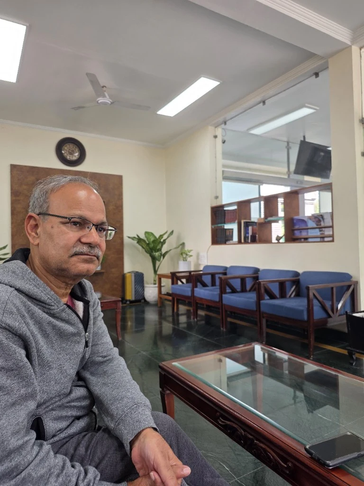

PROF. K. K. DEEPAK
A life led
by wonder.
Some see an ancient cave.
He wonders how people slept in it.
Physiologist. Traveller. Lifelong learner.

One curious mind.
Many ways of seeing.
FIELD NOTES
There’s a story
in the small things.
His curiosity often begins
where the guidebook ends.
OTHER WAYS OF LOOKING
THE SCIENTIST
Understanding the
unseen within.
Visiting Professor at IIT Delhi’s Centre for Biomedical Engineering. Former Professor & Head of Physiology at AIIMS, New Delhi.
View academic profile →1989Autonomic Function Lab
established at AIIMS
established at AIIMS
125+Theses supervised
through a career in teaching
through a career in teaching
NEXUS / RESEARCH COMPANION
A question about the science?
THE WORLD BEYOND THE LAB
Room for
another horizon.
A HOME BASE
40.7128° N · 74.0060° WNew York
A city best discovered on foot. A familiar street can still offer an unfamiliar question.
WALKING · READING · EVERYDAY DISCOVERYA LITTLE PRACTICE IN CURIOSITY
What did you
notice today?
Look at the oldest building on your street. What does it reveal about the ordinary lives once lived inside?
The next good thing
begins with a conversation.
Research, ideas, or a story from the road. Let’s talk.
Start a conversation →kkdeepak@gmail.com